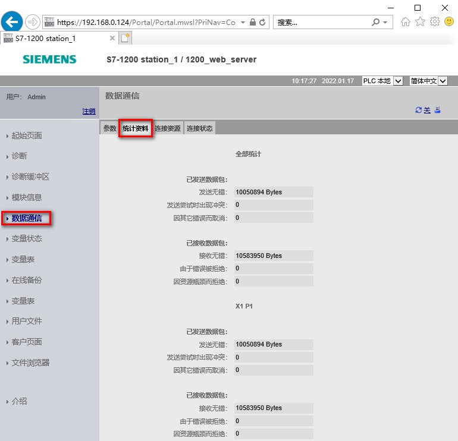

数据通信页面包含四个选项卡：参数、统计资料、连接资源以及连接状态。
"参数"(Parameter) 选项卡显示 CPU 的 MAC 地址、IP 地址、IP 设置以及物理属性，如图 1 所示。
图 1.数据通信-参数
"统计"(Statistics) 选项卡显示了发送和接收的通信统计，如图 2 所示。

图 2.数据通信-统计资料
"资源"(Resources) 选项卡显示了连接资源总数以及如何为不同类型通信分配连接资源的相关信息，如图 3 所示。
图 3.数据通信-连接资源
"连接"(Connections) 选项卡显示 CPU 的连接和选定连接的连接详情，如图 4 所示。
图 4.数据通信-连接状态